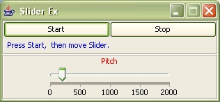

Introduction
The slider demo has been used as a demonstration of Csound's realtime capabilities in several interfaces. An attempt is made here to implement the same realtime application, using the slider, in JavaTM. The csnd.jar package which wraps various C/C++ classes and headers utilized by the Csound API is used along with basic Java classes in order to create the example. The example tries to remain true to Rory Walsh's "Introduction to using the Csound Host API" in order that users may see similarities between the C/C++ and Java examples. Users may also be interested in the TK/TCL slider example by Victor Lazzarini and the Python/wxPython slider example by Michael Gogins included with recent Csound releases.
I. Wrappers
Wrappers are method calls which help translate code from one language to another. In Csound the Java wrappers can be generated as a build option via the script file which runs in the Scons build tool. Since Csound has many build dependencies, if you plan to build generating the Java wrappers, then you also need Java, of course, and also SWIG (Software Wrapper and Interface Generator), the software which helps create the wrapper files. Otherwise you may use one of the various prior built releases which may have the .java files already included. At this time, csound.h, cfgvar.h, csound.hpp, cs_glue.hpp, csPerfThread.hpp, CsoundFile.hpp, CppSound.hpp, and the _jcsound library are the primary Csound source code files which are used for wrapping via SConstruct, Scons, SWIG, your C/C++ compiler, along with java_interface_wrap.cc, java_interface_wrap.h, and java_interface.i. Those files also have various dependencies, at one level of connection or another, which eventually branch out to include all the many classes, functions, types, variables, and libraries Csound has to offer which are described at the highest level by the Csound Users Manual.
Using a wrapper, basically what we want to do is load a native library for C or C++ and be able to access it from a Java program. Java typically uses the JNI Bridge to do this. Java Native Interface (JNI) is a standard programming interface for writing Java native methods and embedding the Java virtual machine into native applications. A very simple description of the procedure would be to write a .java file which loads a .dll library. First you compile the .java file to create a binary .class file, and then run jni on the class file to create an .h file. The machine generated C style .h file includes a method signature which includes formal parameters, but not local variables. Using this machine generated method signature you can write a short .c file, adding local variables if needed. Finally you create a .dll, using a .dll creation tool, and you can run your Java file which loads the .dll library you have created to do something like say "Hello World" from the C program
II. Compilation of Csound using Java
The Csound Application Programming Interface "exposes", or makes available to the programmer certain functions which can be used to run Csound from a C/C++ host program when you link your code against Csound's libraries. These are shown, along with comments in the source code file csound.h. The SWIG machine generated .java wrapper files provide access to the API, as well as to other classes, functions, types, variables, and libraries, and these .java wrappers are compiled and bundled into a .jar file called csnd.jar, which then needs to be imported into your .java file in order to access Csound from the Java environment.
Using an IDE with debugger can greatly help while coding and trying to trace problems which occur. With the Eclipse IDE (Integrated Development Environment), for example, you can either use the .java wrapper files as an import statement in your .java file, or you can add the csnd.jar to the build path so that the binary classes become available at compile time
Since csnd.jar includes various levels of wrappers, an IDE can also help trace problems printing a stack trace to unwind the chain of methods used in a problematic call. For example the csndJNI.java file uses the _jcsound library to declare the various natives, and csnd.java, as part of csnd.jar, is a low-level wrapper which accesses the methods of csndJNI.java
Here is an example of a method from csnd.java. The first argument in the parameter required from the signature is an instance of Csound, the second argument is an integer which is the number of C style char vectors, and the third parameter is a pointer to a vector of type char.
public static int csoundCompile(SWIGTYPE_p_CSOUND_ arg0, int argc, SWIGTYPE_p_p_char argv) { return csndJNI.csoundCompile(SWIGTYPE_p_CSOUND_.getCPtr(arg0), argc, SWIGTYPE_p_p_char.getCPtr(argv));}
The higher level wrapper csound.java also uses csndJNI.java, but requires the user to pass less formal parameters, and assumes an instance of Csound has been declared by the user as in the Java statement Csound csound = new Csound().
public int Compile(int argc, SWIGTYPE_p_p_char argv) { return csndJNI.Csound_Compile__SWIG_0(swigCPtr, argc, SWIGTYPE_p_p_char.getCPtr(argv));}
The csnd.jar also includes a wrapper file CsoundArgVList.java which wraps the Csound source interface file cs_glue.hpp. In C++, this is a simple class for creating argv[] lists for use with functions like csoundCompile(). The Java code below shows how to declare an instance of Csound using a wrapper SWIG pointer to type Csound, count the number of arguments as string tokens, append the tokens to ArgsVList, and use the low-level csnd.java csoundCompile method to return '0' if the compile succeeded.
import csnd.*;
import java.lang.System;
import java.io.*;
import java.util.StringTokenizer;
public class MyMain {
static SWIGTYPE_p_void myvoid;
public static void main(String[] args) {
String line;
CsoundArgVList myargslist = new CsoundArgVList();
SWIGTYPE_p_CSOUND_ mycsound = csnd.csoundCreate(myvoid);
int myargc;
try {
InputStreamReader reader = new InputStreamReader(System.in);
BufferedReader b = new BufferedReader(reader);
System.out.print("Input Command Line : ");
line = b.readLine();
StringTokenizer st =
new StringTokenizer(line, " ,\t\r\n");
myargc = 0;
while (st.hasMoreTokens()) {
String myargs = st.nextToken();
myargslist.Append(myargs);
myargc++;
}
int result = csnd.csoundCompile(mycsound, myargc, myargslist.argv());
System.out.println("COMPILE RESULT = " + result);
} catch (Exception e) {
System.out.println("Something went wrong: " + e.toString());
}
}
}
An elegantly done Java frontend exists in the Csound examples folder by Michael Gogins, CsoundEditor.java, which uses his set of wrappers also included in the csnd.jar which were the first Java wrappers originally included as a Csound build option as wrappers for Csound_VST generated by SWIG. For purposes of this article one could also just append the arguments as below, which was posted on the Csound list by Istvan Varga, instead of taking them from the console. This approach uses a Compile method from the higher level wrapper csound.java, in which there are several different Compile method signatures depending upon the number of arguments your compilation may require.
Csound csound = new Csound();
CsoundArgVList args = new CsoundArgVList();
args.Append("csound");
args.Append("-s");
args.Append("-d");
args.Append("-odevaudio");
args.Append("-b4096");
args.Append("-B4096");
args.Append("-+rtaudio=portaudio");
args.Append("C:\\eclipse\\workspace\\test.csd");
int result = csound.Compile(args.argc(), args.argv());
java.lang.System.out.println( " result = :" + result );
III. chnget
In order to create the slider example, the Java host needs to send realtime k-rate information to the synthesis engine. For this we can use the chnget opcode, and an inward named software bus "pitch" as a k variable which will be the kcps parameter of the oscili opcode. The path to this .csd file will be included in the list of arguments for the compile method utilized by the host.
<CsoundSynthesizer> <CsOptions> </CsOptions> <CsInstruments> sr = 44100 kr = 4410 ksmps = 10 nchnls = 1 chn_k "pitch", 1 gifn ftgen 1,0, 16384, 10, 1, .5, .33, .25, .2, .16, .14, .12,
.1, .9, .8, .7, .6, .5 instr 1 k1 chnget "pitch" ;printk2 k1 asig oscili 5000,k1, 1 out asig endin </CsInstruments> <CsScore> f0 20 i1 0 20 </CsScore> </CsoundSynthesizer>
IV. Passing data from the host to the software bus
Once we have a named software bus in the .csd file, the host application needs to send information to that bus. One way to do this is using methods from the Csound.java wrapper class, CsoundMYFLTArray.java, and declaring input and output channels as wrapper constant types. For this approach a wrapper of C pointer MYFLT is created thru the CsoundMYFLTArray.java GetPtr() method. A control loop is setup using the return values from CsoundCompile(), and CsoundPerformKsmps(), and a float value of 200 is sent to the bus using the CsoundMYFLTArray.java SetValue() method.
Csound csound = new Csound();
CsoundArgVList args = new CsoundArgVList();
CsoundMYFLTArray myfltarray = new CsoundMYFLTArray();
SWIGTYPE_p_p_float myptr = myfltarray.GetPtr();
int result = csound.Compile(args.argc(), args.argv());
int myinputch = csndConstants.CSOUND_INPUT_CHANNEL;
int mycontch = csndConstants.CSOUND_CONTROL_CHANNEL;
if (result == 0){
while(csound.PerformKsmps()== 0){
if(csound.GetChannelPtr(myptr, "pitch", myinputch | mycontch ) == 0)
myfltarray.SetValue(0, 200.00);
}
}
It might be helpful, at this point, to take a look at the C code we are trying to emulate above using Java, since C talks directly to the Csound API without the obfuscation of the wrapper classes. The example below comes from Rory Walsh's "Introduction to using the Csound Host API". It probably does not need to be stated for Java aficionados, but just for the sake of clarity, part of the difficulty here is that Java does not use pointers to allocate memory as in the C programming language.
#include <stdio.h>
#include "csound.hpp"
int main(int argc, char *argv[])
{
CSOUND*csound=csoundCreate(0);
csoundInitialize(&argc, &argv, 0);
int result=csoundCompile(csound,argc, argv);
MYFLT *pvalue;
if (!result)
{
While(csoundPerformKsmps(csound)==0){
If(csoundGetChannelPtr(csound, &pvalue, "pitch",
CSOUND_INPUT_CHANNEL | CSOUND_CONTROL_CHANNEL) == 0)
*pvalue = 200;
}
}
csoundDestroy(csound);
return result;
}
V. Java Threads and Csound Threads
Java is naturally rich with threading mechanisms, and to build a simple slider GUI interface we will probably want to employ different threads. For realtime, Csound needs a separate thread for the event we want to run, and this needs to be a Csound thread. Csound employs a pthread library in order to generate threads.
In the csnd.jar package there is a low-level csoundCreateThread() method from the wrapper csnd.java which requires a type of uintptr_t as one of the parameter values which can be instantiated as below.
SWIGTYPE_p_void myvoid; SWIGTYPE_p_f_p_void__uintptr_t csThread; csnd.csoundCreateThread ThreadID = new csnd.csoundCreateThread(csThread, myvoid);But the higher level wrapper class CsoundPerformanceThread.java provides methods which work very well, and from it we can use the Play(), Stop(), and GetStatus() methods to assist in our interface design. For example, after declaring an instance of the CsoundPerformanceThread class as a new object, "mythread", we may later in the program start the Csound thread if compilation returns '0' by pressing a Java Button labeled "start" on our interface GUI.
Csound csound = new Csound();
int result = csound.Compile(args.argc(), args.argv());
CsoundPerformanceThread mythread = new CsoundPerformanceThread(csound);
int teststatus = mythread.GetStatus();
if (result == 0){
mythread.Play();
}
Similarly we may also want to stop the Csound thread at some point, and have Csound cleanup after itself by pressing a Java Button labeled "stop" on our interface GUI.
mythread.Stop(); csound.Reset();
VI. Java Interface as host
Since the goal of the slider demo implementation in Java is only a simple example, then the design of the GUI should be very simple too. For this we need a "start" button, a "stop" button and a slider. But anyone who has programmed in Java knows a simple GUI in Java is not really all that simple and requires a lot of Swing, and AWT objects as well as various ActionListener and ChangeListener classes to act on those objects when the user interacts with them.
While the complete code for the slider demo will not be given here, a brief example of the interface design will be show below. The first example is the ActionListener class for the "start" button which will begin the Csound thread.
private class StartActionListener implements ActionListener{
public void actionPerformed(ActionEvent e)
{
if (result == 0){
mythread.Play();
}
}
}
The next example is the ChangeListener class for the slider object which will send events to the Csound named software bus "pitch" in our .csd file via the GetChannelPtr(), and myfltarray.SetValue() methods below. What is not shown here is the creation of the slider object in which the setMajorTickSpacing() method will determine the smoothness of the oscili opcode output depending upon the placement of the slider's cursor. For details you can download the complete sliderDemo.java file.SliderDemo.zip
private class PitchSliderChangeListener implements ChangeListener
{
public void stateChanged(ChangeEvent e)
{
JSlider source = (JSlider)e.getSource();
if (source.getValueIsAdjusting())
{
PitchNum = (int)source.getValue();
if (PitchNum == 0)
{
System.out.println("0");
}
else
{
if (result == 0){
if(csound.GetChannelPtr(myfltarray.GetPtr(), "pitch",
csndConstants.CSOUND_INPUT_CHANNEL | csndConstants.CSOUND_CONTROL_CHANNEL ) == 0)
myfltarray.SetValue(0, (double)PitchNum);
}
}
}
}
}
Finally the ActionListener class for the "stop" button will stop the Csound thread and close the GUI. The comments for csPerfThread.hpp state "Once the playback is stopped…the performance thread calls csoundCleanup()", thus it may not be necessary to call the Reset() and Clear() methods below. We know that Java automatically reclaims heap space thru garbage collection when objects are no longer needed, however Csound's thread needs to be stopped.
private class StopActionListener implements ActionListener
{
public void actionPerformed(ActionEvent e)
{
mythread.Stop();
//csound.Reset();
//args.Clear();
System.exit(0);
}
}

Acknowledgements
Java and the Java Coffee Cup Logo are trademarks or registered trademarks of Sun Microsystems, Inc. in the U.S. and other countries.References
Csound Users Manual, sourceforge.net/projects/csound also www.csounds.com/ (26 June 2006).Csound source code, sourceforge.net/projects/csound (26 June 2006).
Eclipse IDE, www.eclipse.org/ (26 June 2006).
Java, java.sun.com/ (26 June 2006).
SWIG(Simplified Wrapper Interface Generator), www.swig.org/ (26 June 2006).
Walsh, Rory: "Introduction to using the Csound Host API". Available as .pdf download from: www.csounds.com/ . Rory Walsh announces "HOWTO - Csound Host API". Also Posted Csound List, June 08, 2006.